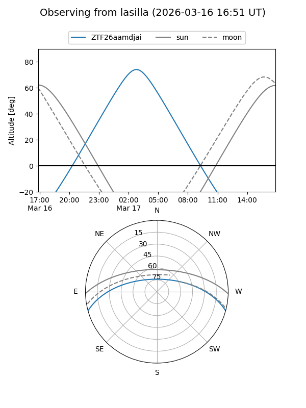
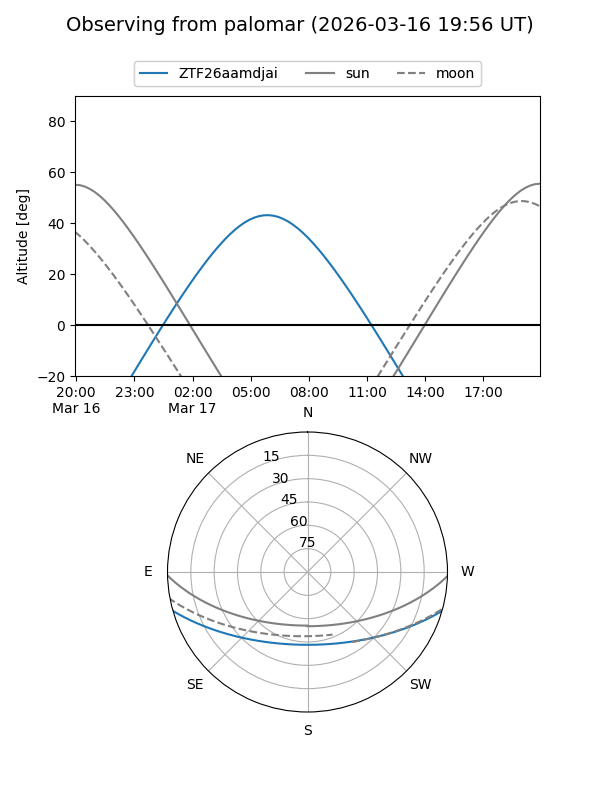

ZTF26aamdjai
Target ZTF26aamdjai at 2026-03-17 07:26
Aliases and brokers:
FINK: link
Lasair: link
ALeRCE: link
alt names
ZTF26aamdjai (ztf,fink_ztf)
Coordinates:
equatorial (ra, dec) = 145.4786,-13.32795
equatorial (HMS+DMS) = 09:41:54.87,-13:19:40.61
galactic (l, b) = (248.1579,+28.76930)
Flags:
Photometry:
last ztfg=19.76
1 ztfg detections
Lightcurve
Visibility


Additional plots